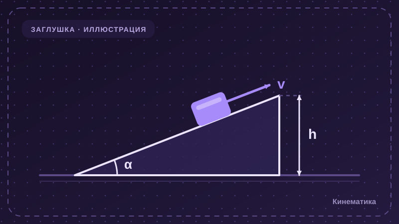

01
Кинематика
Описание движения без выяснения причин: координаты, перемещение, скорость и ускорение. Учимся читать графики и решать задачи на равноускоренное движение.
v = v₀ + at · s = v₀t + at²/2
10 класс · школьный курс
Механика, молекулярная физика, термодинамика и электричество — коротко о том, что изучает курс, какие формулы пригодятся и как проверить свои знания.
Пять больших тем — от движения тел до электричества
Описание движения без выяснения причин: координаты, перемещение, скорость и ускорение. Учимся читать графики и решать задачи на равноускоренное движение.
Законы Ньютона объясняют, почему тела меняют скорость. Сюда же — импульс, работа, мощность и закон сохранения энергии.
Строение вещества и свойства идеального газа: концентрация молекул, давление, температура и уравнение состояния.
Внутренняя энергия, количество теплоты, работа газа и первый закон термодинамики. Разбираемся, куда «уходит» энергия.
Электрические заряды, закон Кулона, напряжённость поля, постоянный ток и закон Ома для участка цепи.
Минимальный набор для решения задач
Ускорение прямо пропорционально равнодействующей силе и обратно пропорционально массе тела.
Перемещение при постоянном ускорении. Если начальная скорость равна нулю, путь равен at²/2.
Векторная величина. Изменение импульса равно импульсу силы: Δp = F · Δt.
Энергия движения. При торможении она переходит в другие виды энергии, например во внутреннюю.
Связывает давление, объём и температуру идеального газа. R ≈ 8,31 Дж/(моль·К).
Теплота, переданная газу, идёт на изменение его внутренней энергии и на работу газа.
Сила взаимодействия точечных зарядов обратно пропорциональна квадрату расстояния между ними.
Сила тока на участке цепи прямо пропорциональна напряжению и обратно пропорциональна сопротивлению.
Четыре шага от теории до результата
Разберите определения и смысл каждой формулы, а не только её запись.
Начните с простых: дано, перевод единиц, формула, подстановка, ответ.
Пройдите викторину по теме и отметьте вопросы, которые вызвали трудности.
Вернитесь к теории по слабым местам и пройдите тему ещё раз.
10 класс · школьная программа
12 вопросов о движении, силах, энергии, газах и электричестве. Выберите тему — или пройдите всю программу подряд.
Каждый вопрос — с иллюстрацией и разбором
Выберите вариант из четырёх — изменить его уже нельзя.
После каждого вопроса — объяснение и нужная формула.
Лучший результат по каждой теме сохраняется в браузере.

Клавиши 1–4 — ответ, Enter — дальше
Все темы
Ни одной ошибки — можно смело двигаться дальше по программе.